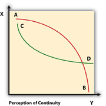

Look at the fourth of the Note 3.1 "Introductory Exercises" for this chapter. If you deciphered the hidden message, how did you do it? You may have tried looking for words that were diagonal or backwards, using skills you learned solving similar puzzles in the past. While there are many ways to solve this puzzle, there is only one right answer.Adapted from McLean, S. (2003). The basics of speech communication. Boston, MA: Allyn & Bacon. Reading from right to left (not left to right), and bottom to top (not top to bottom), the hidden message reads: Your perspective influences how you perceive your world.
Where did you start reading on this page? The top left corner. Why not the bottom right corner, or the top right one? In English we read left to right, from the top of the page to the bottom. But not everyone reads the same. If you read and write Arabic or Hebrew, you will proceed from right to left. Neither is right or wrong, simply different. You may find it hard to drive on the other side of the road while visiting England, but for people in the United Kingdom, it is normal and natural.
We can extend this concept in many ways. Imagine that you are doing a sales presentation to a group where the average age is much older or younger than you. In terms of words to use to communicate ideas, references to music or movies, even expectations for behaviors when dating, their mental “road map” may be quite different from yours. Even though your sales message might focus on a product like a car, or a service like car washing, preconceived ideas about both will need to be addressed.
For example, how many advertisements have you seen on television that have a song from specific time period, like the 1980s, or perhaps the 1960s? The music is a clear example of targeting a specific audience with something distinctive, like a familiar song. When speaking or writing, your style, tone, and word choice all influence the reader. The degree to which you can tailor your message to their needs will be associated with an increase in the overall effectiveness of your message. These differences in perspective influence communication and your ability to recognize not only your point of view but theirs will help you become “other-oriented” and improve communication.
Look at the puzzle again and see if you can avoid seeing the solution. It’ll be hard because now that you know where it is, you have a mental road map that leads you to the solution. The mental state where you could not see it, or perceive it, is gone. Your audience has a mental road map that includes values, experiences, beliefs, strategies to deal with challenges, even scripts for behavioral expectations. You need to read the maps as closely as possibly in order to be able to communicate from common ground.
This discussion illustrates what the German philosopher Jürgen HabermasHabermas, J. (1984). The theory of communicative action (Vol. 1). Boston, MA: Beacon Press. calls preunderstandingA set of expectations and assumptions from previous experience that we apply to a new problem or situation., a set of expectations and assumptions from previous experience that we apply to a new problem or situation. We draw from our experiences to help guide us to our goal, even when the situations may be completely different. We “understand” before we experience because we predict or apply our mental template to what we think is coming.
Expectations affect our perceptions. If the teacher says, “I need to see you after class” your perception might involve thoughts like, “What have I done? Why me? What does he or she want?” and you may even think back to other times in similar situations. This may contribute to a negative perception of the meeting, and then you might be surprised to learn the teacher only wanted to tell you about a scholarship opportunity. The same idea applies to your audience. They will have certain expectations of you as a speaker.
“The customary forms and configurations (of communication) that members expect” are called conventionsConventional language patterns for a specific genre..Kostelnick, C., & Roberts, D. (1998). Designing visual language: Strategies for professional communicators. Needham Heights, MA: Allyn & Bacon. You’ve probably heard the terms “conventional,” perhaps in relation to a “conventional oven.” This use means a standard type oven with a heat source as opposed a microwave oven. Who decided that a stove, for example, would have burners on top and a front-opening door to the oven? Why four burners and not three, or two? Many modern stoves have ceramic burners that are integrated in to the top of the oven, or even into the top of a counter, separate from the oven. These new applications “stretch” the notion of what is the standard for a stove.
People use conventions to guide them every day. On which side of the plate will you find the spoon? In a formal place setting, the answer is “right.” If, however, you are at a potluck supper, you may be handed a plate with all your utensils, including the spoon, just sitting on top. Or you might find a pile of spoons next to the plates and have to get one for yourself. In each case there are a set of conventions in place that we use to guide behavior and establish expectations. At a formal dinner, eating with your fingers might be unconventional or even rude. The same actions at a potluck might be the dominant convention, as in everyone is doing it.
In business communication, conventions are always in place. The audience will have a set of expectations you need to consider, and you need to keep an open mind about the importance of those expectations; but you also need to achieve your goal of informing, persuading, or motivating them. If you are presenting a sales message and the results are zero sales, you’ll have to take a long look at what you presented and develop alternative strategies. Providing a different perspective to your audience while adapting to their expectations and finding common ground is a good first step in gaining and maintaining their attention.
We often make assumptions about what others are communicating and connect the dots in ways that were not intended by the speaker. As a business communicator, your goal is to help the audience connect the dots in the way you intend while limiting alternative solutions that may confuse and divide the audience.
Taking care to make sure you understand before connecting your dots and creating false expectations is a positive way to prepare yourself for the writing process. Do you know what the assignment is? Are the goals and results clear? Do you know your audience? All these points reinforce the central theme that clear and concise communication is critical in business and industry.
Can you imagine what life would be like if you heard, saw, and felt every stimulus or activity in your environment all day long? It would be overwhelming. It is impossible to perceive, remember, process, and respond to every action, smell, sound, picture, or word that we see, hear, small, taste, or touch. We would be lost paying attention to everything, being distracted by everything, and lack focus on anything.
In the same way, a cluttered message, with no clear format or way of discerning where the important information is located, can overwhelm the listener. It is handy, therefore, that we as humans can choose to pay attention to a specific stimulus while ignoring or tuning out others. This raises the question, however, of why we choose to pay attention to one thing over another. Since we cannot pay attention to everything at once, we choose to pay attention to what appears to be the most relevant for us.
This action of sorting competing messages, or choosing stimuli, is called selectionAction of sorting competing messages or choosing stimuli.. Selection is one very important part of perception and awareness. You select what to pay attention to based on what is important to you, or what you value, and that is different for each person. Let’s pretend you’re reading an article for class, or perhaps you’re not as much reading but skimming or half-listening to the author’s voice in your head, and only following along enough to get the main idea, as you do when you scan rather than read something word for word.
At the same time you are thinking about the attractive classmate who sits in the third row, wondering when it will be noon, and starting to think about what to eat for lunch. In this real-world example, we can quickly count the four stimuli you’ve selected to pay attention to, but not all of them receive equal attention at every moment. Perhaps your stomach starts to growl; while the mental image of the attractive classmate is indeed attractive, your stomach demands the center stage of your attention.
A stage is a useful way to think about your focus or attention. There are times when you see everything on the stage, the literal stage in terms of theater or the page you are reading now, in print or online. The stageThe setting, scene, and context of the communication interaction. refers to the setting, scene, and context of the communication interaction, and can be equally applied to written or oral communication. This page can be a stage, where objects, symbols, and words are placed to guide your attention in the same way an actor striding across a theater stage will compel you.
You may perceive everything happening at once—while your attention is divided, you still have a larger perspective. Suppose you have just come home from work and are standing by your kitchen table opening the day’s mail. At the same time, you are planning what to cook for dinner and trying to get your dog leashed up to take a quick walk outside. You open a letter in a preprinted envelope whose return address is unfamiliar. The relationships between the words or characters are readily apparent. With one glance you can see that the letter is an introduction letter with a sales message, you assess that it doesn’t interest you, and into the round file (garbage can) it goes.
If you were the author of that letter, you might be quite disappointed. How do you grasp a reader’s attention? Part of the solution lies in your ability to help the reader select the key point or bit of information that will lead to “what else?” instead of “no, thanks.”
The same lesson applies to public speaking, but the cues will be distinct. The audience won’t throw you into the round file, but mentally they may ignore you and start planning what’s for dinner, tuning you out. They may fidget, avoid eye contact, or even get up and walk out—all signs that your sales message was not well received.
There are other times where you are so focused on one character or part of the stage that you miss something going on the other side. In the same way, as you sit in your late-morning class and focus on your growling stomach, the instructor’s voice becomes less of a focus until you hear laughter from your classmates. You look up to see and hear a friend say, “We can clearly see the power and the importance of nutrition and its impact on attention span,” as he or she gestures in your direction. You notice that everyone is looking back at you and realize they too heard your stomach. Your focus and attention are important and constantly challenged.
As we follow the bouncing ball of attention, we see how selection involves focusing on one stimulus while limiting our attention on another, or ignoring it altogether. We do this as a matter of course.
The process of selection and ignoring has been discussed in both contexts of a learned behavior as well as something we are born with, as in instinct or preprogrammed behavioral patterns. Regardless of whether this process is instinctive or learned, we can easily see from the previous example how the speaker, to a degree, competes with internal and external stimuli.
Internal stimuliThose that arise from within one’s self, such as being hungry. are those that arise from within one’s self, such as being hungry. External stimuliInvolves stimulation from outside one’s self. involve stimulation from outside one’s self, such as the image of the attractive classmate or the sound of the instructor’s voice. As a communicator, your awareness of both of these sources of stimuli will help you recognize the importance or preparation, practice, and persistence as you prepare your message with them in mind. How will you help guide the audience’s thoughts about your topic? How will you build attention-getting features throughout your written work? How will you address issues like sleepiness when you cannot change the designated time of your speech, scheduled right after lunch? All these issues relate to the selection process, and to a degree the speaker can influence the perception of both internal and external stimuli.
Selection has three main parts: exposure, attention, and retention.Klopf, D. (1995). Intercultural encounters: The fundamentals of intercultural communication (2nd ed., p. 7). Englewood, CO: Morton. Selective exposureBoth information we choose to pay attention to and information that we choose to ignore, or that is unavailable to us. is both information we choose to pay attention to and information that we choose to ignore, or that is unavailable to us. For example, in a class you may have been required to view a student-created YouTube video presentation on which is better for you, Gatorade or water. As your levels of exposure to stimuli influence your decisions, you may think, “Oh, I’ve heard this before,” and tune the speaker out. Selective attentionInvolves focusing on one stimulus and tuning out a competing stimulus. involves focusing on one stimulus, like the image of an attractive classmate, and tuning out a competing stimulus, like the instructor’s voice. Selective retentionInvolves choosing to remember one stimulus over another. involves choosing to remember one stimulus over another.
You may be out walking and spot a friend from the same class. Your friend may say, “The program we had to watch for class said Gatorade has trans fat in it. Do you think that’s true?” and you may be at a loss, having no memory of hearing any such thing because, while you were present in your room, you were paying attention to other stimuli. Furthermore, you may not be a nutrition major like your friend so that the term “trans fat” may not mean anything to you. To someone majoring in nutrition, it might be a common term used across their classes, but if you are an accounting major, you may not be familiar with the term. This illustrates how one aspect of selection, like exposure, can influence another aspect, like retention.
You might then think to yourself that the point in which you tuned out in the Gatorade program has something to do with this term and realize that as the speaker became technical about the nutritional and metabolic properties of Gatorade, you lost interest because you were unfamiliar with the terms being used. This highlights one aspect of a presentation that a speaker can focus on to influence the perception process. Not everyone in the audience will understand all the terminology, so by defining terms, providing visual aid cues, or speaking in common terms, you can make your topic and its presentation more accessible to a larger percentage of your audience.
Now, if you were asked to recall the basic properties of Gatorade after watching the program, could you? Even if you recall the general idea of the program, you may have a hard time remembering any specific property because you were focused on your hunger. Although you may have heard the words, you may not have chosen to listen to them. Hearing means you heard words, but listening implies you actively chose to listen to the program, processing the sounds, following the thread of discussion, making it easier for you to recall. This again illustrates the point that you chose one stimuli over another, in effect selecting what to pay attention to, and if the speaker was competing for your attention with more attractive, interesting or distracting stimuli, you probably just tuned him or her out, in effect deselecting them.
OrganizationThe process of sorting information into logical categories or series. is the process of sorting information into logical categories or series. We often take things we perceive and organize them into categories based on what we have perceived previously. Think back to the Gatorade video. Suppose the speaker started out with an attention statement and quickly moved to highlight three main points in the introduction. While the attention statement got you, by the second main point you were already starting to think, “This is going to be just another speech on how great Gatorade is for my body.” You may think this because you have already heard other speakers presented similar information and you classify what you think this presentation is going to be in relation to your previous experiences.
But this speaker may have given some thought to the presentation and how to make it unique and interesting, and prepared their discussion on the nutritional aspects in more depth. As a result, the information may have been organized into categories like ingredients, how your body uses the ingredients, and what the net result is. The final conclusion might be that if you exercise and burn off the calories present in Gatorade, it might be a positive choice, but if you drink it just to drink it, then it will only provide you with empty calories just like any other soft drink.
The organization scheme used to create three categories focuses on nutrition and the process by which Gatorade’s ingredients are used by the body. The conclusion creates two categories of consumers. This organization scheme can promote active listening and allow the audience to follow, but the speaker must take into account the possibility that an audience member might think, “Oh no, not again.” To set this presentation apart from others the audience might have heard, the speaker could include a phrase like, “Is Gatorade always for you? Not necessarily. Let’s look at…” which gains attention and penetrates a stereotype.
When you write a document or give a presentation, you may not be able to anticipate all the ways an audience might organize the information you present or how they might use it, but by investing time in seeing it from their perspective, you can improve your organization and be a more effective communicator.
For example, suppose you are assigned the task of writing a cost-benefit analysis report on a specific product currently in development. Do you already know the essential points you need to include and the common industry standards for this type of report? You may not know, but you have written an essay before and appreciate the need for organization. Your ability to organize information, taking something that you know or have experienced and applying it to new information, helps you make sense of your world.
In the early twentieth century, some psychologists thought we could examine parts of things, much as a scientist would examine an atom, and make a whole and complete picture regardless of context. Their theory was that the setting and scene would not influence the picture or perspective. In response to this view, other psychologists developed what they called Gestalt principles—the German word “Gestalt” referring to the unified whole. According to Gestalt theory, context matters, and the whole is greater than the sum of the parts. What you see and how you see it matters, and you yourself play a role in that perception of organization.
In the fifth of the Note 3.1 "Introductory Exercises" for this chapter, you were asked to connect nine dots with four straight lines, without retracing any line. Did you find a solution? (A common solution appears at the end of this chapter.) The key to solving this puzzle is finding a way to “think outside the box”—in this case, to take your pencil outside the implied square, or box, formed by the three rows of dots. The physical configuration of the dots contributed to the illusion of the “box.” But in fact there is no box, and our tendency to see one where one does not exist creates barriers to solving the puzzle. Gestalt theory states that we will perceive the nine dots as belonging to a whole—a group or set having a certain shape—whether or not that whole actually exists.
Gestalt principles apply not only to images or objects, but also to ideas and concepts. You can associate two or more bits of information in predictable ways, but your perspective can influence your view of the overall idea. We don’t always have all the information we need to draw a conclusion, literally drawing a series of relationships to form a whole picture in our minds, so we often fill in the gaps. We guess and make logical leaps, even suspend disbelief, all in an effort to make sense of our experiences.
In your presentations, if you jump from topic to topic or go off on a tangent, what happens to the listener’s ability to listen and follow you effectively? Why make barriers for your audience when you’ve worked so hard to get their attention? How does this relate to Gestalt principles? By failing to recognize our natural tendency to want ideas, shapes, or words to make sense, the author is confusing the reader. What happens when the reader is confused? He or she moves on to something else, and leaves your writing behind. The opposite of clear and concise, confused, and poorly organized writing can distract and defeat even the most motivated of readers. Table 3.2 "Gestalt Principles of Organization" lists some of the Gestalt organization principles.
Table 3.2 Gestalt Principles of Organization
| Principle | Definition | Example |
|---|---|---|
| Proximity | Organization based on relationship of space to objects | Next to me on the beach, I see my daughter playing with her pail and shovel; in the middle distance, a trio of kayakers paddle by; farther away, I see several power boats, and in the far distance, the green shore of Long Island. |
| Continuity | Drawing connections between things that occur in sequence | I am beginning to notice a pattern in the absentee rate in our department. For the past year, more workers have been absent on the first Friday of the month than on other days. I expect we will again have many absences next Friday, as it is the first Friday of the month. |
| Similarity | Grouping things or concepts by properties they share | To make appliquéd candles,Ruffman, M. (2007, August 12). How to appliqué candles with flowers and other stuff. ToolGirl, Mag Ruffman’s Official Web Log. Retrieved from http://www.toolgirl.com/toolgirl/2007/12/how-to-applique.html#more you will need the following:
|
| Uniformity/Homogeneity | Noting ways in which concepts or objects are alike | Armored personnel carriers include the Stryker, LAV, Pandur, M113 Armored Personnel Carrier, Amphibious Assault Vehicle, Expeditionary Fighting Vehicle, Grizzly APC, Rhino Runner, Bison (armored personnel carrier), and Mamba APC. |
| Figure and Ground | Emphasis on a single item that stands out from its surroundings | On a rock in Copenhagen Harbor stands the small statue of The Little Mermaid, a memorial to one of Denmark’s most beloved citizens, Hans Christian Andersen. |
| Symmetry | Balancing objects or ideas equally from one side to the other | Representing the conservative viewpoint was Wall Street Journal correspondent John Emshwiller; the liberal viewpoint was argued by New York Times columnist Paul Krugman. |
| Closure | Tendency to use previous knowledge to fill in the gaps in an incomplete idea or picture | The wording of the memo was, “It is important for all employees to submit their health insurance enrollment selections no than November 1,” but everyone understood that it should have said, “no later than November 1.” |
Let’s examine some of the commonly used Gestalt principles: proximity, continuation, similarity, and closure.
It makes sense that we would focus first on things around us and the degree to which they are close to us and to each other. ProximityThe perceptual organization of information based on physical relationship of space to objects. is the perceptual organization of information based on physical relationship of space to objects. In creating a scene for a play or movie, a stage designer knows that the audience will tend to pay attention to objects in the foreground, unless special emphasis is added to objects farther away. This principle extends to people and daily life. Just because someone is walking down the street next to someone else, this does not necessarily mean they have a connection to each other—they are simply in close proximity.
We also see a similar tendency in the principle of continuityTendency for our brain to see lines and movement where none exist.. We like things to be orderly, and our brain will see lines and movement where none exist. Examine Figure 3.5 "Continuity". What you see? Do you perceive two lines crossing one another? Or an X? The principle of continuity predicts that you would demonstrate a tendency to perceive continuous figures. The two lines cross one another, and you might even say from top to bottom or the reverse, when there is no motion indicated.
Figure 3.5 Continuity
Continuity can also lead to a well-known logical fallacy, or false belief, involving sequence and cause-effect relationships. If something happens after something else, does that mean that the first event caused the second event? You wish for rain and it rains. Connected? Logic and common sense would say no. You have a dream about a plane crash, and the next day there is a major airline crash. Did your dream cause the crash? Obviously not.
When objects or events are similar, we tend to group them together in our minds, again making the assumption that they are related by their common characteristics. SimilarityThe perceptual organization of information based on perceived points of common characteristics across distinct items. is the perceptual organization of information based on perceived points of common characteristics across distinct items. For example, a horse, a mule, and a donkey are distinct, but we perceive them as being similar to one another.
The principle of closureOur tendency to use previous knowledge to fill in the gaps in an incomplete idea or picture. underscores our tendency to use previous knowledge to fill in the gaps in an incomplete idea or picture. If you are talking to a friend on your cell phone and the connection breaks up for a few seconds, you may miss some words, but you can grasp the main idea by automatically guessing what was said. You do this based on your previous history of communicating with your friend on similar topics. Do you always guess correctly? Of course not. Look at Figure 3.6.
Figure 3.6
Do you see a ring of Pac-Man-like circles?
When we say we see a star, we don’t really see one because there is no star. The five Pac-Man shapes in that arrangement, however, allow our mind to say, “If this was connected to this and that was connected to that, there would be a star.” Sometimes the sense we make does not match reality, and we see a star where there is no star.
Sometimes we “fill in the blanks” without even being aware of it. When we speak on a topic and fail to clearly articulate a point or substantiate an assertion, we leave a “hole” in our presentation that the listener may or may not be aware of, but will predictably fill. This tendency to jump to conclusions may seem like a disadvantage, but it is only a disadvantage if you are unaware of it. If fact, it’s a positive ability that allows us to infer and guess correctly, often in times of crisis when time is limited. But we don’t always guess correctly. If your goal is to communicate your message to the audience, then by definition you don’t want a “pothole” to interrupt, distract, or create a barrier that leads to misinterpretation.
After selection and organization, interpretation is the third step in the perception process. From your past experiences combined with your current expectations, you assign meaning to the current stimuli. If the word “college” for you has meaning, then what comes to mind? If a high school student has to take the PSAT (Preliminary Scholastic Aptitude Test) in the morning, what does that word mean to him? Will his state of anxiety and anticipation over the importance of the exam and the unknown word of college influence how he responds to that word? If his parents ask, “Where are you planning on going to college?” when he is simply focused on the test that may influence his options, the word itself may take on a whole new meaning. It may invite issues of control (“Which college? You are going to the college we went to, right?”) or of self-esteem (“Am I good enough to go to college?”) to become associated with the word “college.”
The word itself may shift in terms of meaning across time. Let’s say the high school student did well on the PSAT and went to the same college as his parents. Is it the same college, or just the same location and buildings? It may have a tradition, but it is at the same time new and ever-changing, just like the students that arrive each year. Fast forward a couple of years and the college may represent a place where you studied, made friends, and came to know yourself. In a few more years, you may choose to become a member of the alumni association. The meaning of the word “college” can shift intrapersonally across time, and can mean different things to different groups.
Let’s rewind and look back at a test gone bad, taken by a less than adequately prepared student from a household where there may not be sufficient resources to make the dream of college come true. The image of college may remain an image instead of a reality; a goal not attained. Structural barriers like socioeconomic status, parental and peer influences, and the need to work to support yourself or your family can all influence your decisions and perspective.
Perceptions are influenced by how we select, organize, and interpret words and ideas.